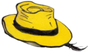

"Живая шляпа" Николай Носов.
Шляпа лежала на комоде, котенок Васька сидел на полу возле комода, а Вовка и Вадик сидели за столом и раскрашивали картинки.
Вдруг позади них что-то плюхнулось — упало на пол.

Они обернулись и увидели на полу возле комода шляпу.
Вовка подошел к комоду, нагнулся, хотел поднять шляпу — и вдруг как закричит:
— Ай-ай-ай! — и бегом в сторону.
— Чего ты? — спрашивает Вадик.
— Она жи-жи-живая!
— Кто живая?
— Шля-шля-шля-па.
— Что ты! Разве шляпы бывают живые?
— По-посмотри сам!
Они обернулись и увидели на полу возле комода шляпу.
Вовка подошел к комоду, нагнулся, хотел поднять шляпу — и вдруг как закричит:
— Ай-ай-ай! — и бегом в сторону.
— Чего ты? — спрашивает Вадик.
— Она жи-жи-живая!
— Кто живая?
— Шля-шля-шля-па.
— Что ты! Разве шляпы бывают живые?
— По-посмотри сам!

Вадик подошел поближе и стал смотреть на шляпу. Вдруг шляпа поползла прямо к нему. Он как закричит: — Ай! — и прыг на диван. Вовка за ним.
Шляпа вылезла на середину комнаты и остановилась.
Ребята смотрят на нее и трясутся от страха. Тут шляпа повернулась и поползла к дивану.
Вадик подошел поближе и стал смотреть на шляпу. Вдруг шляпа поползла прямо к нему. Он как закричит: — Ай! — и прыг на диван. Вовка за ним.
Шляпа вылезла на середину комнаты и остановилась.
Ребята смотрят на нее и трясутся от страха. Тут шляпа повернулась и поползла к дивану.
— Ай! Ой! — закричали ребята.
Соскочили с дивана — и бегом из комнаты. Прибежали на кухню и дверь за собой закрыли.

— Я у-у-хо-хо-жу! — говорит Вовка.
— Куда?
— Пойду к себе домой.
— Почему?
— Шляпы бо-боюсь! Я первый раз вижу, чтоб шляпа по комнате ходила.
— А может быть, ее кто-нибудь за веревочку дергает?
— Ну, пойди, посмотри.
— Пойдем вместе. Я возьму кочергу. Если она к нам полезет, я ее кочергой тресну.
— Постой, я тоже кочергу возьму.
— Да у нас другой кочерги нет.
— Ну, я возьму лыжную палку.

Они взяли кочергу и лыжную палку, приоткрыли дверь и заглянули в комнату.
— Где же она? — спрашивает Вадик.
— Вон там, возле стола.
— Сейчас я ее как тресну кочергой! — говорит Вадик. — Пусть только подлезет ближе, бродяга такая!
Но шляпа лежала возле стола и не двигалась.
— Ага, испугалась! — обрадовались ребята. — Боится лезть к нам.
— Сейчас я ее спугну, — сказал Вадик.
— Он стал стучать по полу кочергой и кричать:
— Эй ты, шляпа!
Но шляпа не двигалась.

— Давай наберем картошки и будем в нее картошкой стрелять, — предложил Вовка.
Они вернулись на кухню, набрали из корзины картошки и стали швырять ее в шляпу.

Швыряли, швыряли, наконец, Вадик попал. Шляпа как подскочит кверху!
— Мяу! — закричало что-то. Глядь, из-под шляпы высунулся серый хвост, потом лапа, а потом и сам котенок выскочил.
— Васька! — обрадовались ребята.

— Наверно, он сидел на полу, а шляпа на него с комода упала, — догадался Вовка.
Вадик схватил Ваську и давай его обнимать!
— Васька, миленький, как же ты под шляпу попал?
Но Васька ничего не ответил, он только фыркал и жмурился от света.